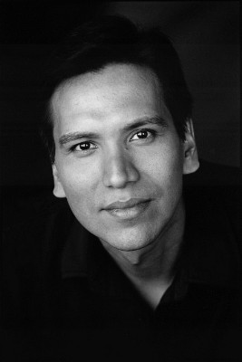
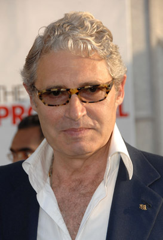

#10114 Die Frau, die vorausgeht
Alternativ: Woman Walks Ahead (Englischer Titel)


 IMDB-Wertung: 6.5 / 10
IMDB-Wertung: 6.5 / 10  Metascore: 51
Metascore: 51 
Die New Yorker Malerin Catherine Weldon (Jessica Chastain) hat vor einem Jahr ihren geliebten Mann verloren. Um ihre Trauer endlich hinter sich zu lassen, reist sie im Jahr 1889 nach North Dakota, wo sie ein Porträt des legendären Sioux-Stammeshäuptlings Sitting Bull (Michael Greyeyes) anfertigen möchte. Mit ihrer selbstbewussten und modernen Einstellung sowie ihrem Engagement für die amerikanischen Ureinwohner macht sie sich vor Ort jedoch viele Feinde, allen voran den Colonel Groves (Sam Rockwell). Während sich Catherine und Sitting Bull allmählich anfreunden, setzt dieser alles daran, die letzten verbliebenen Ureinwohner aus der Gegend zu vertreiben. Catherine, die mittlerweile den indianischen Namen „Frau geht voraus“ verliehen bekommen hat, muss sich entschieden, ob sie Sitting Bull und seine Stammesangehörigen bei ihrem Kampf für Freiheit und Unabhängigkeit unterstützen soll…
Jahr: 2017
Dauer: 102 Minuten
FSK: 12
Land: USA Studio: A24Tonspuren: DTS - ,
Untertitel: Deutsch,
Auflösung: 1080p (1920x808) Größe: 7393 MB
Genre: Drama, Western, Geschichte, Biographie
Regisseur: Susanna White
Drehbuch: Steven Knight
Soundtrack: George Fenton
Darsteller:
 Jessica Chastain als Catherine Weldon
Jessica Chastain als Catherine Weldon Louisa Krause als Loretta
Louisa Krause als Loretta Chaske Spencer als Chaska
Chaske Spencer als Chaska Ciarán Hinds als James McLaughlin
Ciarán Hinds als James McLaughlin- Kindall Charters als Waiter - Sleeping Car
 Sam Rockwell als Silas Groves
Sam Rockwell als Silas Groves Jacob Browne als Waiter - Dining Car
Jacob Browne als Waiter - Dining Car Luce Rains als Old Man at Train Station
Luce Rains als Old Man at Train Station- Rulan Tangen als Susan McLaughlin
-  Michael Greyeyes als Sitting Bull
- Monika Crowfoot als Seen By The Nation
 David Midthunder als Shell King
David Midthunder als Shell King Bill Camp als General Crook
Bill Camp als General Crook Rachel Singer als Dry Goods Assistant
Rachel Singer als Dry Goods Assistant- Susan Conklin als Woman at Cannonball
- Sharon Anne Henderson als Sioux Woman at Ration Day
- Robert Mirabal als Only Man
- Willy RunsAbove als Chief Black Bear
- Cosme Duarte als Indian Policemen
- Gary Wellborn als Government Offical
- Matthew R. Williams als Calvary Officer
 Richard Beal als Townsperson (uncredited)
Richard Beal als Townsperson (uncredited)- Stephen Conn als Townsperson (uncredited)
 Rachel de la Torre als Townswoman (uncredited)
Rachel de la Torre als Townswoman (uncredited)- Lyle DeRose als Cavalry Soldier (uncredited)
- Andrea Good als Native Villager (uncredited)
- Manny Greenfield als Government Official (uncredited)
- Rip Lowe als Cavalry (uncredited)
-  Michael Nouri als Karl Valentine (uncredited)
- Josh Outzen als Cavalry Soldier (uncredited)
- Philip David Pickard als Colonel (uncredited)
- Tami Nichols Reilly als Townsperson (uncredited)
- Rodrigo Tactaquin als Ghost Dancer (uncredited)
- Rick Tadra als Government Offical (uncredited)
 Brenda Wehle als Anna Maria Valentine (uncredited)
Brenda Wehle als Anna Maria Valentine (uncredited)- Denita Wolf als Townsperson (uncredited)
- Boots Southerland als Cab Driver NY
- Rod Rondeaux als Indian Robber
- Debbie Black Lance als Old Sioux Woman
- Lyle Sandoval als Tracker
- Ben Ziegler als Attacker at Cannonball
- Makayah Crowfoot als Sioux Child
- Ben Black Bear als Chief
- Robert Moreno Sr. als Thunder
- Andersen Kee als Indian Policemen
- Joleen Baughman als Townswoman (uncredited)
- David Hight als Cavalry Lt. (uncredited)
- Claire Weinstein als Native Woman (uncredited)
- David White als 1st Lt. US Cavalry (uncredited)
Datei: X:\HD-Western-2000-2015\Frau, die vorausgeht, Die (2017, FSK12, 1920x808).mkv seit 05.12.2018
Festplatte: HD Eastern+Western
 Es gibt insgesamt 61 Filme in der Gruppe 'HD-Western-2000-2015'
Es gibt insgesamt 61 Filme in der Gruppe 'HD-Western-2000-2015'